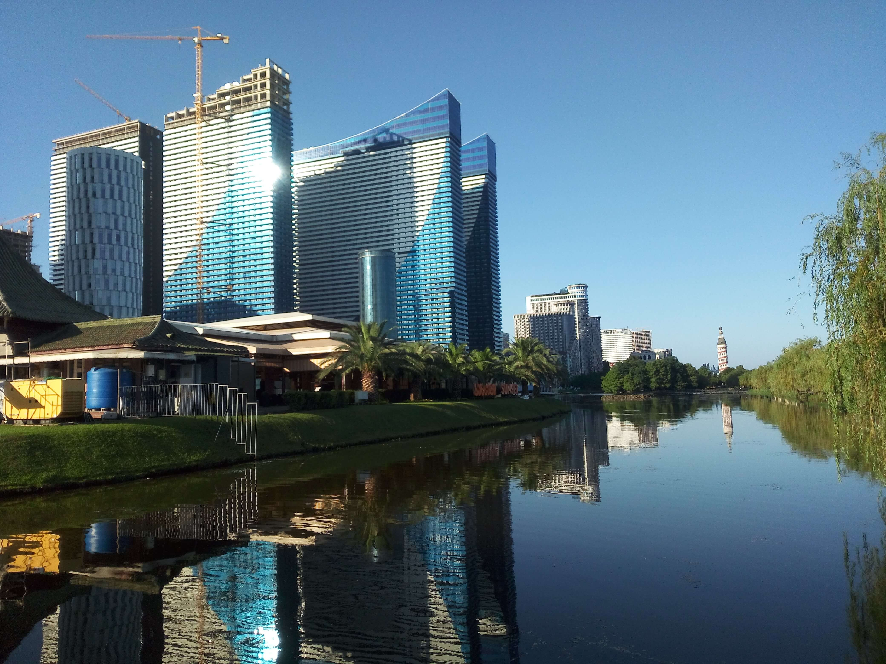
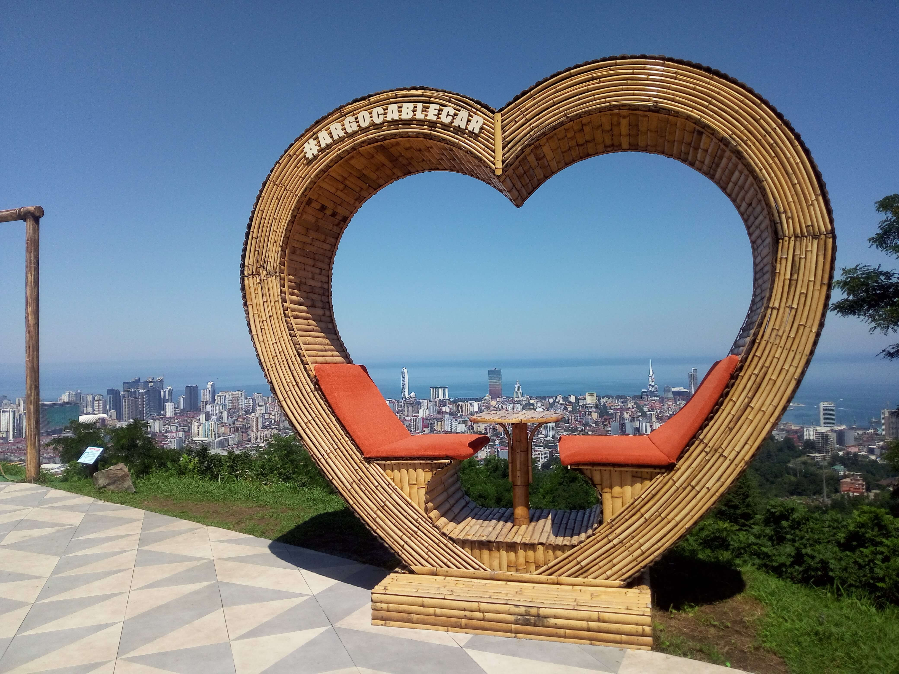
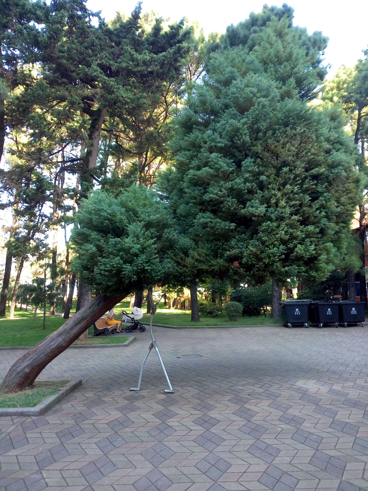
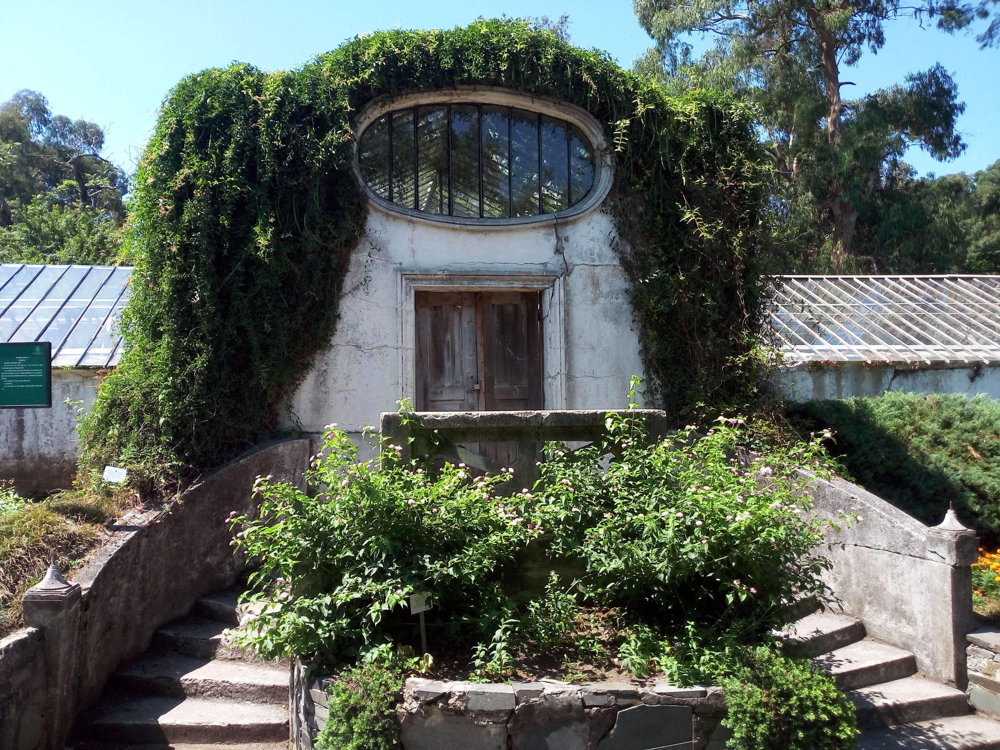
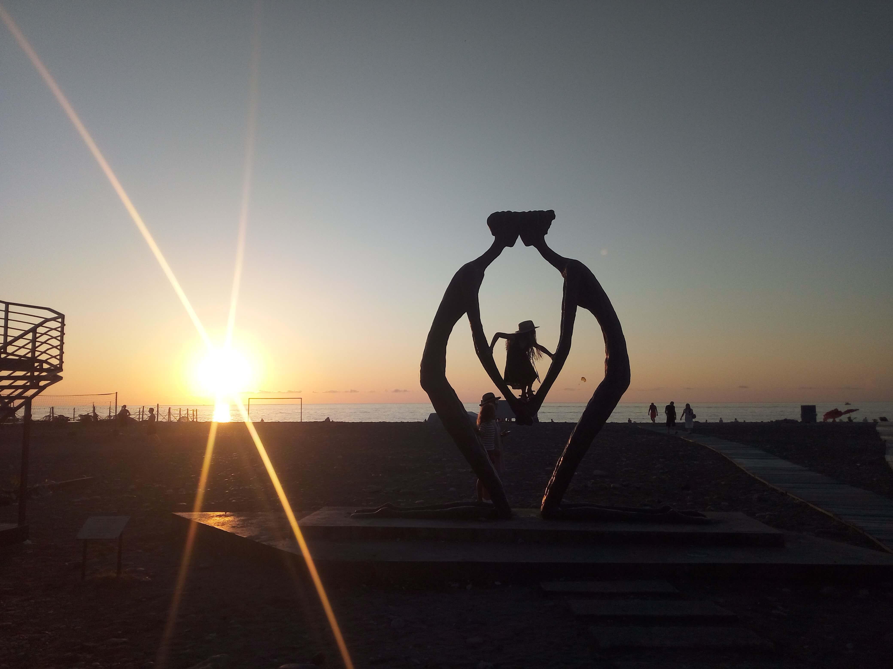

Batumi, Georgia
Georgia · Black Sea Coast
Located on Georgia’s Black Sea coast, Batumi is a vibrant seaside city where modern architecture, green spaces, and coastal charm come together. Its lively boulevard stretches along the waterfront, while parks, botanical gardens, and panoramic viewpoints reveal different sides of the city. From the historic streets to the surrounding natural landscapes, Batumi offers a distinctive atmosphere shaped by its location between the sea and the mountains. These photographs capture my personal memories of Batumi and its unique character. The city's blend of contemporary landmarks and traditional influences makes it an especially interesting place to explore. Its coastal setting also offers beautiful views and a lively atmosphere throughout the year.

6 May Park
Discover one of Batumi's oldest public parks, with green pathways, a lake, and peaceful surroundings.
Explore Photos ↗
Argo Cable Car
Enjoy panoramic views of Batumi, the Black Sea, and the surrounding mountains from above.
Explore Photos ↗
Batumi Boulevard
Explore the city's famous seaside promenade, with palm trees, walking paths, and coastal views.
Explore Photos ↗
Birds Zoo
Discover the birds and natural surroundings of this small attraction in the heart of Batumi.
Explore Photos ↗
Botanical Garden
Explore diverse plant collections, beautiful coastal scenery, and peaceful garden pathways.
Explore Photos ↗
City View
Discover Batumi's skyline, modern architecture, and beautiful views across the Black Sea coast.
Explore Photos ↗